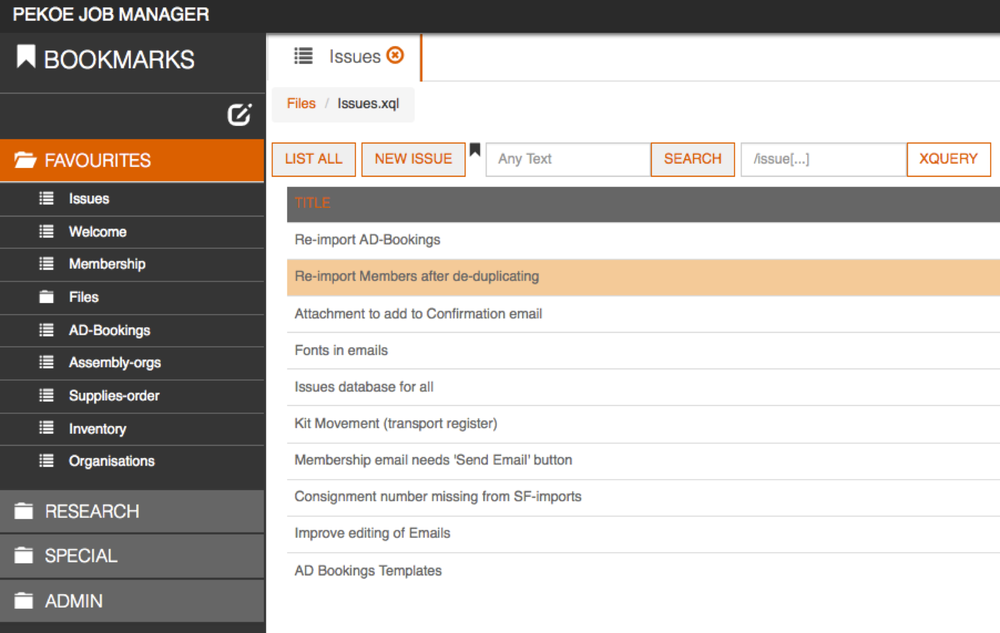

eXistdb is at the core of the Office of the Historian’s
open government and digital history initiatives. It powers our
public website, allowing visitors to search and browse instantly
through nearly a hundred thousand archival government documents.
On the fly, it transforms our XML documents and query results into
web pages, PDFs, ebooks, and APIs and data feeds. Its support of the
high-level XQuery programming language and its elegant suite of
development tools empower me and my fellow historians to analyze
data and answer research questions.
The open source nature of eXistdb has delivered far more value
to us than its simply being “free”; its active, welcoming, expert
collaborative user community has helped us learn, discover eXistdb’s
plethora of capabilities, and find the best solutions to our research
and publishing challenges. eXistdb belongs in the toolkit of all
digital humanities, open government, and publishing projects.
Joe WicentowskiHistorianOffice of the HistorianU.S. Department of State
We are using eXistdb on our onkopedia.com publishing platform.
The reliability and performance of eXistdb is outstanding and the
competent and fast support by its community is awesome. eXistdb
was a major key factor to the success in our project and we will
likely continue with eXistdb in upcoming projects.
Andreas JungLead developer of zopyx.comFounder of the XML Director projectMajor contractor for onkopedia.com project
At the University of Victoria Humanities Computing and Media Centre, we use eXistdb in a dozen or more projects, including a couple of fairly high-profile ones:
We've been using eXistdb since version 0.9, and the third project on that list dates back to 2003.
All applications above are
Martin HolmesUniversity of Victoria Humanities Computing and Media Centre
eXistdb offers a unique environment for full stack XML web application development.
To create applications ranging from web sites with CMS-like feature to collaborative workflows,
we at Oppidoc started by developing an XQuery layer to map every URL of an application to a pipeline.
The pipeline consists of:
i) an XQuery model that performs requests and updates to the database,
ii) an XSLT presentation layer that generates views and
iii) a final XQuery layer that copies the views into factorized page templates.
eXistdb has been extremely efficient and easy to configure to implement and deploy
this architecture because of its native support for XQuery, XSLT and a simple pipelining language.
Moreover the XQuery profiling tools have proven invaluable in identifying bottlenecks and correcting them.
Overall eXistdb helps us to streamline our development process and quickly adapt to our customer's needs
and evolving data models thanks to its ability to run as a data and application container.
Stéphane SireFounder of Oppidoc
The Repertorium of Old Bulgarian Language and Letters
is a TEI-based metadata project developed in order to support the machine-assisted
comparison of the contents of medieval Slavic miscellany manuscripts.
Manuscript descriptions are stored as individual TEI XML documents inside eXistdb,
with queries and visualizations managed with XQuery. The accompanying image illustrates
a plectogram, a graphic visualization in SVG generated with XQuery for exploring
similarities across the contents of manuscripts. The project, directed by Anisava Miltenova,
is based at the Institute of Literature of the Bulgarian Academy of Sciences.
David Birnbaumobdurodon.org
The Tibetan Buddhist Resource Center (TBRC) holds the world’s single largest collection
of Tibetan texts—nearly 10 million scanned pages and over 11,000 Unicode Tibetan texts.
TBRC.org provides online access to over 4,000 users via an Ajax client written in Google
Web Toolkit as a front-end to the eXistdb.
TBRC has used eXistdb since 2004 to store
the catalog for the texts in the library as well as a knowledgebase of persons and
places that provide a cultural context for Tibetan literature. The integration of
eXistdb with the Lucene full-text indexing has created a powerful framework with
which TBRC.org is able to provide searchable access to the library via comprehensive
tables of contents in Tibetan and a large collection of texts that have been input
in Unicode in centers around the world. Our production system currently runs eXistdb 2.1.
Chris TomlinsonSenior Technical Staff MemberTibetan Buddhist Resource CenterCambridge, Massachusetts

I’ve built a specialised Job-processing system aimed at Small-business users who need
custom solutions on the web. This system allows them to record all their Client data
and use it in documents generated from templates in MS Word, Open Office Text or
Spreadsheet, Email, or plain text - and more to come. In particular, I’m targeting
businesses with a distributed workforce who have tried CRMs and/or custom solutions
in MS Access, Filemaker or similar RDBMS and haven’t been able to effectively manage their data.
eXistdb’s wide range of features has allowed me to build a comprehensive system.
In comparison to other open-source systems, a key feature of eXistdb is the permissions
system which can be applied right down to the file level (including binary files).
This has allowed me to build a multi-tenanted system.
Alister Pillow
eXistdb and oXygen XML Editor – a great combination for our Digital Dictionary of Surnames in Germany.
The entries – about 850.000 – are stored in an eXistdb database and edited from within oXygen.
Franziska HornTechnical Staff MemberTechnische Universität Darmstadt
ScoutDragon initially started as a baseball research project by a group of baseball enthusiasts
including writers, agents, scouts, fans, fantasy owners, and even former players.
This group realized a need for original English content, data, and research on baseball players in Asia.
All data for multiple sports covering multiple sporting leagues is stored in XML
documents within eXistdb in a schema derived from IPTC’s SportsML, most
extensions having to do with providing multilingual support of players
so that information may be displayed in English, Japanese, Korean, and/or
Chinese. XQuery has proven to be a fantastic language for not just
transforming the vast quantities of data to web pages, but also for data
analysis and the generation of sabermetrics-based statistics.
Michael WestbayLead Programmer/System AdministratorScoutDragon.comJapan
Semanta’s
core business is metadata in business intelligence. Part of our
concern is parsing metadata from reporting platforms. Many of these reporting
platforms supply their metadata in large XML chunks, which we then need to
further process efficiently. A typical example is our IBM Cognos connector,
where we use eXistdb heavily to extract details of report structures and data
sources. Originally we thought we would only use eXistdb for prototyping, but
ultimately, we have used embedded eXistdb in the production.
David VoňkaProgrammerSemantaCzech Republic
The Centre for Document Studies and Scholarly Editing
of the Royal Academy of Dutch Language and Literature (Ghent, Belgium)
develops rich scholarly collections of textual data, and publishes them as
digital text editions and language corpora. From the start, we have fully
embraced open standards and publication technologies. At first, we started out
with the Cocoon XML publication framework, which back then nicely integrated
with eXistdb (or the other way round) for efficient querying of XML content.
Since the introduction of eXistdb’s MVC framework, we have extended our use of
eXistdb as a full application server, not only for querying the indexed data,
but also driving the entire application and presentation logic.
The texts we’re querying (or rather, processing) with eXistdb are mostly
document-centered XML documents that are conformant to the schemas developed
by the Text Encoding Initiative (TEI). Depending on the specific edition
project, they are enriched with metadata such as named entities, editorial
annotations, and sometimes highly specific textual documentation (such as
critical apparatuses documenting variation among text versions).
Though our texts are mostly in Dutch, we try to connect and contribute to
methodological good practice emerging in the interesting field that is Digital
Humanities. Some of our exemplar projects include a collection of letters in
relation to the Belgian literary journal Van Nu en Straks; a digital edition
comparing 20 versions of De trein der traagheid, a novel by the Belgian
novelist Johan Daisne; and a digital edition of the first Dutch dialect
survey in the Flemish region by Pieter Willems (developed between 1885–1890).
Ron Van den BrandenCentre for Scholarly Editing and Document Studies of the Royal Academy of Dutch Language and LiteratureGhentBelgium
At the Cluster of Excellence “Asia and Europe in a Global Context,”
we use eXistdb to store our collections of MODS (bibliographical)
and VRA (image metadata) records. We have developed two open source
applications for this, Tamboti and Ziziphus, where our records can be
searched and edited. Both applications are built entirely in XML
technologies (XQuery and XForms) using eXistdb and make use of LDAP
integration and detailed user rights management.
Heidelberg Research Architecture,
Cluster of Excellence “Asia and Europe in a Global Context,”
The University of HeidelbergHeidelbergGermany
Haptix Games is a video game and interactive
application development and publishing studio, and we have been a
Microsoft shop for as long as I can remember. We have leveraged C#, MVC,
and IIS for user experience; WCF, OData, and BizTalk for message
exchanges; MSSQL and Entity Framework for storage. That is a lot of
acronyms and even more complexity under the hood. Prototyping a concept
usually involved all abovementioned technologies, while the final solution
release was either expensive, inflexible, or did not meet client expectations.
With the adoption of eXistdb our development and release workflows have
become highly agile and more competitive. Utilizing eXistdb as a
dark-data solution platform and not just another XML database allowed us
to eliminate 80% of our Microsoft code base just by taking advantage of the
built-in web server, low-level data manipulation using XQuery 3.0, restful
data exchange, and native storage capabilities.
Chris MiszturCTOHaptix GamesChicago, Illinois
easyDITA is an end-to-end solution for
collaboratively authoring, managing, and publishing content
using the DITA XML standard. Companies utilize easyDITA to reduce the
cost and time to market to deliver content in a variety of formats and
languages. By leveraging eXistdb, easyDITA is able to deliver customers
exceptional ability to search, manage, localize, and publish content.
eXistdb’s schemaless design and flexible indexing system makes it easy to
support customizations like reporting, analytics, and new content models
without sacrificing performance or doing major redesigns.
Casey JordancofoundereasyDITA, Jorsek LLCRochester, New York
We at XML Team Solutions help media
and entertainment companies integrate sports news and data feeds. These
feeds are predominantly XML. We use eXistdb for two things:
Regulating and preparing vendor web service XML for transmission to
clients. Scheduled jobs access remote web services, preprocess, and
pass on XML via HTTP Client to our main feed processor.
API to drive graphics for live television broadcast.
API built from RESTXQ pro‐ vides live updates of results to
broadcaster clients. Currently uses JMS to sync from one write
DB to two load-balanced readers. Also has an XForms
“beat the feed” live score updater which mimics the incoming
feed in case feed vendor is delayed.
We recently delivered a project for BBC Sports to deliver live
broadcast information. eXistdb met all the requirements for speed,
cost, and reliability for an API to deliver up-to-date scores
and statistics to BBC television.
Paul KellyDirector of Software DevelopmentXML Team Solutions CorpCanada